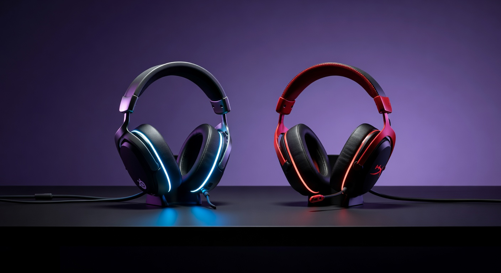

As an Amazon Associate I earn from qualifying purchases. Links below may earn us a commission at no extra cost to you.
SteelSeries Arctis Nova 7 vs HyperX Cloud Alpha Wireless: Versatility vs 300-Hour Battery
Two of the most popular wireless gaming headsets under $200, and they couldn't be more different in philosophy. The SteelSeries Arctis Nova 7 offers simultaneous 2.4GHz and Bluetooth connectivity, multi-platform compatibility across PC, PS5, PS4, Nintendo Switch, and mobile — plus SteelSeries' best microphone technology to date. The HyperX Cloud Alpha Wireless does one thing better than almost any wireless headset on the market: battery life. At 300 hours on a single charge, you could leave it on for weeks without plugging in. This comparison breaks down exactly which headset is worth your money in 2026.

SteelSeries Arctis Nova 7
~$180
2.4GHz + BT 5.2 · Multi-platform · AI mic
VS
HyperX Cloud Alpha Wireless
~$200
300hr battery · 50mm dual-chamber · PC/PS5
Quick Verdict
Nova 7 for multi-platform and mic quality; Cloud Alpha Wireless for pure battery life and immersive audio on PC/PS5
The Arctis Nova 7 is the more versatile headset — dual wireless (2.4GHz for gaming, Bluetooth for phone calls), six-platform compatibility, and the best microphone in SteelSeries' lineup make it the default recommendation for most gamers. The HyperX Cloud Alpha Wireless carves out a very specific niche: if you game almost exclusively on PC and PS5, want to never think about battery life, and prioritize audio depth over mic capability, its 300-hour battery and 50mm dual-chamber drivers make a compelling case at $200. For the average gamer who jumps between platforms or uses their headset for voice chat, the Nova 7 is the smarter buy. For the set-it-and-forget-it long-session gamer, the Cloud Alpha Wireless is unmatched.
Head-to-Head: Category by Category
Battery Life
HyperX Cloud Alpha Wireless (300 hours)
This is the most extreme battery advantage of any wireless headset comparison. The HyperX Cloud Alpha Wireless delivers 300 hours on a single 2.4GHz charge — that's 12.5 days of continuous audio. In practice, you could charge it monthly. The Nova 7 offers a solid 38 hours on 2.4GHz (or 55 hours on Bluetooth) — which is excellent by any normal standard. But the 8x difference is genuinely meaningful: Cloud Alpha Wireless users simply don't think about battery. Nova 7 users charge weekly. The HyperX achieves this through efficient hardware design and the absence of features that drain power (no RGB, no noise cancellation). If battery anxiety is a real concern for you, the Cloud Alpha Wireless eliminates it entirely.
Platform Compatibility & Connectivity
SteelSeries Arctis Nova 7
The Nova 7's simultaneous dual-wireless capability is its defining feature: 2.4GHz for zero-latency gaming and Bluetooth 5.2 simultaneously — meaning you can game on PC or console while staying connected to your phone for calls or music. It supports PC, PS5, PS4, Nintendo Switch, and any Bluetooth device (iOS, Android). The HyperX Cloud Alpha Wireless is limited to PC and PlayStation via its USB dongle — no Bluetooth, no Switch, no mobile. If you ever want to use your headset for music on your phone, take calls while gaming, or use it across multiple platforms, the Nova 7 is the clear choice. The Cloud Alpha Wireless is a dedicated PC/PS5 gaming headset, nothing more.
Audio Quality & Sound Signature
HyperX Cloud Alpha Wireless (50mm Dual Chamber)
HyperX's dual-chamber driver design physically separates bass frequencies from mids and highs within each 50mm driver — the result is a cleaner soundstage where low-end rumble doesn't bleed into the clarity of mids. The bass is punchy and satisfying without muddying dialogue or directional cues. The Nova 7's 40mm drivers deliver a wide, balanced sound that excels at positional audio — important for competitive FPS — with a slightly leaner bass response. For immersive cinematic games, RPGs, and music, the Cloud Alpha Wireless's audio depth is the richer experience. For competitive games where clean directional cues matter more than bass impact, the Nova 7 holds its own.
Microphone Quality
SteelSeries Arctis Nova 7 (ClearCast Gen 2)
SteelSeries' ClearCast Gen 2 microphone with AI noise cancellation is one of the best integrated mics on a gaming headset. It uses bidirectional recording to cancel ambient noise without the processing artifacts that plague single-mic solutions. Teammates hear you clearly even in noisy environments. The mic is also retractable — fold it up when not needed, pull it out for comms. The HyperX Cloud Alpha Wireless includes a detachable noise-canceling microphone that's functional but notably less impressive — it captures your voice clearly in quiet environments but struggles in noisy ones. If you use voice chat regularly in team games, stream, or Discord daily, the Nova 7's mic advantage is meaningful and immediately audible to your teammates.
Comfort & Build Quality
SteelSeries Arctis Nova 7 (AirWeave cushions)
Both headsets are comfortable for long sessions, but the Arctis Nova 7 uses SteelSeries' AirWeave ear cushions — a breathable woven fabric that stays cooler over hours compared to traditional leatherette foam. The suspension headband distributes weight evenly and fits a wide range of head sizes without adjustment fatigue. The HyperX Cloud Alpha Wireless uses HyperX's signature leatherette cushions — plush, well-padded, and with excellent passive noise isolation. Leatherette is slightly warmer but offers better sound isolation. Both are excellent for extended sessions; the choice comes down to whether you prefer breathability (Nova 7) or passive isolation (Cloud Alpha).
Value for Money
SteelSeries Arctis Nova 7 (~$180)
At $20 less than the Cloud Alpha Wireless, the Nova 7 offers more features: Bluetooth, six-platform compatibility, a superior microphone, and simultaneous dual wireless. The Cloud Alpha Wireless commands a $20 premium for its battery life and audio depth — which are real advantages, but narrow ones. For most gamers who value versatility, mic quality, and multi-platform use, the Nova 7 is better value. The Cloud Alpha Wireless is worth the premium specifically for PC/PS5 players who game in long sessions and prioritize not charging over mic quality and platform flexibility.
Spec Comparison
| Spec | SteelSeries Arctis Nova 7 | HyperX Cloud Alpha Wireless |
|---|---|---|
| Price | ~$180 | ~$200 |
| Drivers | 40mm Neodymium | 50mm Dual Chamber |
| Frequency Response | 20Hz – 22kHz | 15Hz – 21kHz |
| Battery Life | 38hr (2.4GHz) / 55hr (BT) | 300hr (2.4GHz) |
| Connection | 2.4GHz + Bluetooth 5.2 | 2.4GHz only |
| Platform Support | PC, PS5, PS4, Switch, Mobile | PC, PS5, PS4 |
| Microphone | ClearCast Gen 2, AI NC, retractable | Detachable, noise-canceling |
| Ear Cushions | AirWeave (breathable fabric) | Leatherette (passive isolation) |
| Weight | ~290g | ~300g |
| Simultaneous Dual Wireless | Yes (2.4GHz + BT) | No |
4 Key Differences
1
Battery: 300hr vs 38hr
The Cloud Alpha Wireless's 300-hour battery life is one of the most extraordinary specs in consumer electronics. You charge it roughly once a month. The Nova 7's 38 hours (2.4GHz) is competitive but requires weekly charging for heavy users. This is the single most decisive difference — if battery life is your top priority and you don't need Bluetooth or multi-platform support, it's a strong argument for the Cloud Alpha Wireless.
2
Connectivity: Dual Wireless (BT + 2.4GHz) vs 2.4GHz Only
The Nova 7 connects simultaneously to your gaming platform (2.4GHz) and your phone (Bluetooth 5.2) — you can hear Discord, game audio, and phone calls through one headset without switching connections. The Cloud Alpha Wireless is 2.4GHz only, limited to PC and PlayStation. If you ever want Bluetooth for calls, music, or Switch gaming, only the Nova 7 delivers it.
3
Microphone: ClearCast Gen 2 AI vs Detachable Basic
SteelSeries' ClearCast Gen 2 with AI noise cancellation is a class above the Cloud Alpha Wireless's detachable mic. Teammates hear you clearly in noisy environments, and the retractable design means you won't accidentally bump it. The HyperX mic is adequate for voice chat in quiet settings but noticeably trails the Nova 7 for competitive or streaming use.
4
Drivers: 50mm Dual Chamber vs 40mm
HyperX's dual-chamber driver design separates bass from mids/highs within each driver cup — the result is bass impact without muddiness. It's a noticeably more immersive sound for cinematic games. The Nova 7's 40mm drivers prioritize positional accuracy and detail — excellent for competitive FPS where hearing footstep direction matters more than bass depth.
Which Should You Buy?
SteelSeries Arctis Nova 7
~$180
Best for: Multi-platform · Voice chat / streaming · Phone calls while gaming · Competitive FPS
🛒 Check Price on Amazon
See All Headset Picks →
HyperX Cloud Alpha Wireless
~$200
Best for: PC + PS5 gamers · Long sessions · Never charging · Immersive single-player audio
🛒 Check Price on Amazon
See All Headset Picks →
More Headset Guides & Comparisons
Frequently Asked Questions
Yes — HyperX's 300-hour battery claim has been independently verified across multiple reviews. The key is that the Cloud Alpha Wireless has no RGB, no active noise cancellation, no Bluetooth radio, and no high-power DSP processing — the hardware is stripped to essentials, allowing the battery to run extraordinarily long. At 3 hours of gaming per day, you'd charge it roughly every 3.5 months. At 8 hours per day, still nearly 5 weeks between charges. It's genuinely one of the most notable specs in wireless gaming peripherals.
The Arctis Nova 7 does not support Xbox wirelessly — Xbox requires headsets to use its proprietary wireless protocol, which neither the Nova 7 nor most third-party headsets support. It does work on Xbox via a 3.5mm wired connection. For Xbox wireless gaming, you'd need a headset with native Xbox Wireless protocol (like HyperX Cloud III Wireless) or use Bluetooth if your Xbox supports it. For PC, PS5, and Switch gaming, the Nova 7 works wirelessly without limitation.
Yes — this is the Nova 7's standout feature. It maintains a 2.4GHz connection to your gaming platform (PC or PlayStation) and a simultaneous Bluetooth 5.2 connection to your phone or any Bluetooth device. You'll hear game audio, Discord, and phone calls or music all through one headset without switching. The audio mixing is hardware-level — no software required. This makes it exceptionally useful for streamers, content creators, or anyone who doesn't want to miss calls while gaming.
The Cloud Alpha Wireless has a slight edge for music listening. Its 50mm dual-chamber drivers provide a fuller bass response and better instrument separation compared to the Nova 7's 40mm drivers. Both are gaming headsets first, so neither competes with audiophile headphones, but the Cloud Alpha Wireless is the more enjoyable listener for music, podcasts, and movie soundtracks. The Nova 7 is more neutral and analytical — better for gaming, serviceable for everything else.
The Arctis Nova Pro Wireless ($349) is SteelSeries' flagship — it adds active noise cancellation, a swappable battery system (meaning infinite runtime with two batteries), Hi-Res audio certification, and a base station with analog/optical inputs. The Nova 7 ($180) skips ANC and the base station but keeps simultaneous dual wireless, the ClearCast Gen 2 mic, and the same broad platform compatibility. For most gamers, the Nova 7 delivers 80% of the experience at roughly half the price. The Nova Pro Wireless is for enthusiasts who specifically want ANC or the ability to swap batteries mid-session.
No — the Cloud Alpha Wireless uses passive noise isolation only, provided by its leatherette ear cushions physically blocking ambient sound. This is actually one reason its battery life is so extraordinary: active noise cancellation (ANC) is one of the most power-intensive features a headset can run. The passive isolation is decent — it reduces ambient background noise noticeably compared to open-back headsets — but it won't compare to dedicated ANC headsets like the Sony WH-1000XM5 for blocking out the environment. For gaming, passive isolation is usually sufficient.
Affiliate Disclosure: As an Amazon Associate I earn from qualifying purchases. Prices shown are approximate and may vary.